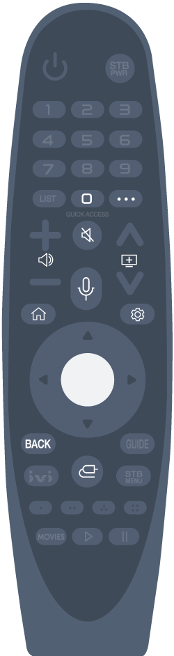

Uso del botón del mando a distancia
Pulse brevemente o mantenga pulsado el botón del mando a distancia para acceder a diversas funciones.

Para utilizar el botón , púlselo durante un segundo al menos.
- : Aparecerá la pantalla de edición de ACCESO RÁPIDO.
-
 :
Muestra los botones adicionales del mando a distancia.
:
Muestra los botones adicionales del mando a distancia.
- : Permite ajustar el nivel de volumen.
-
 :
Seleccione esta opción para desactivar el sonido de la TV.
:
Seleccione esta opción para desactivar el sonido de la TV.
:
Entre en el menú Accesibilidad.
- : Se puede cambiar de canal.
- : Hay disponible una función de reconocimiento de voz.
-
 :
Muestra el menú de inicio.
:
Muestra el menú de inicio.
:
Muestra la lista que se ha utilizado anteriormente.
-
 :
Accede al menú de ajustes rápidos.
:
Accede al menú de ajustes rápidos.
:
Accede al menú de todos los ajustes.
- : Cierra el menú.
-
 :
Selecciona una fuente de entrada.
:
Selecciona una fuente de entrada.
:
Acceder a Panel de casa.
Uso del control remoto Magic
-
Si agita el mando a distancia Mágico a izquierda y derecha o gira la rueda mientras apunta a la TV, el puntero aparecerá en la pantalla de la TV.
Al mover el control remoto a la dirección que desee, el puntero seguirá el movimiento. - Mueva el puntero a la posición que desee y pulse el botón para ejecutar la función.
-
El puntero desaparece si no se ha utilizado durante un período determinado de tiempo. Cuando el puntero desaparezca de la pantalla, mueva el control remoto Magic hacia los lados. Volverá a aparecer.
El puntero desaparecerá al pulsar los botones arriba, abajo, izquierda o derecha, y el control remoto funcionará de la manera habitual.
Si el puntero no responde con suavidad, puede reiniciar el puntero moviéndolo al borde de la pantalla.
Utilice el control remoto dentro del rango especificado (10 metros). Es posible que sufra algún error de comunicación al utilizar el dispositivo fuera del área de cobertura o si hay obstáculos dentro del área.
Puede observar fallos de comunicación si utiliza accesorios. Los dispositivos como los hornos microondas y de red LAN inalámbrica funcionan en la misma banda de frecuencia (2,4 GHz) que el control remoto Magic. Esto puede provocar fallos de comunicación.
Los golpes pueden hacer que el control remoto Magic no funcione bien.
Cuando utilice el control remoto Magic, tenga cuidado de no golpear muebles, dispositivos electrónicos ni a otras personas que se encuentren a su alrededor.
Configuración del puntero del control remoto Magic
Puede configurar la velocidad y la forma del puntero que se muestra en pantalla.
-
Pulse el botón del mando a distancia.
-
Seleccione
 Accesibilidad Opciones de puntero.
Accesibilidad Opciones de puntero.
- Velocidad de rastreo
- Permite configurar la velocidad del puntero.
- Tamaño del puntero
- Permite seleccionar el tamaño del puntero.